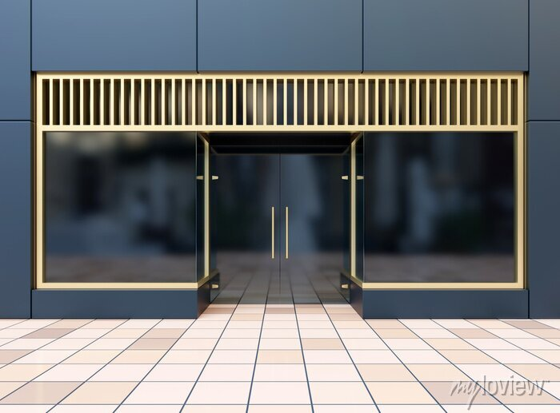

1º PASSO
Selecione o item exato que você deseja trocar ou devolver. Atente-se para política de troca/devolução. Só é permitido troca ou devolução de itens pelo prazo de 7 dias desde a data da compra. É importantíssimo que os itens estejam inalterados, ou seja, sem defeitos ou modificações. É de responsabilidade do cliente o cuidado do item em sua posse. Caso contrário, o item não estará apto para troca ou devolução.
2º PASSO
Caso o produto esteja apto para a troca ou devolução, o cliente estará a um passo. A partir daí, o comprador deve entrar em contato com nossa equipe. É possível entrar em contato fisicamente com a unidade mais perto de você ou por email da loja. É necessário informar o código de compra, além do item estar com etiqueta. Em caso de troca de item por um tamanho sem estoque, o consumidor poderá selecionar qualquer outro item da loja com valor semelhante.